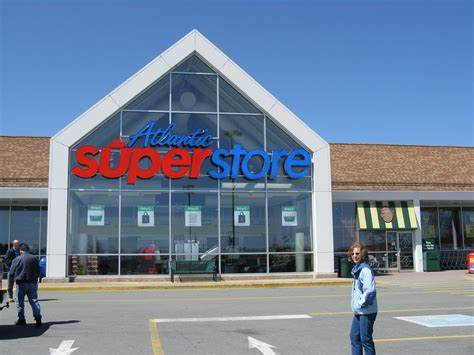
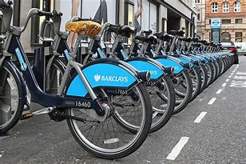

Analysing Employee Performance for Hr Analytics– Personal Project (May 2023)
Tools used: Python and MySQL
View project Source Code here
Open PDF- Utilized SQL to analyze a real-world database and extract useful information
- Preprocessed the data using Python for improved performance
- Removed duplicate rows from the dataset
- Removed rows with irrelevant data type values in numeric columns
- Removed irrelevant values from each column and performed validation checks for data integrity
- Exported the cleaned dataset as a .csv file, using UTF-8 encoding
- Converted the preprocessed dataset into an SQL file
- Improved data quality by removing duplicates and irrelevant data
- Ensured data integrity by validating values, checking inconsistencies or discrepancies, and enforcing proper data types, units, or formats.

ANALYSIS OF SUPERSTORE PROFITS – Personal Project (April 2023)
Tools used: Power BI
View project Source Code here
- Conducted an in-depth analysis of Superstore profits by utilizing Power BI to clean, explore, and analyze sales data within a specific timeframe.
- data cleansing techniques to ensure data quality and integrity for accurate insights.
- Employed advanced data visualization techniques in Power BI to create insightful charts, graphs, and interactive dashboards.
- Identified top-performing products and categories based on profit margins and sales performance.
- Generated comprehensive reports and dashboards to present findings and key insights to stakeholders.
- Provided actionable recommendations to optimize profit margins and enhance overall business performance.
- Effectively communicated complex analytical findings to non-technical stakeholders in a clear and concise manner.
- Demonstrated strong attention to detail and analytical skills throughout the project, ensuring data accuracy and reliability.
- Successfully published the reports and dashboards for easy access and sharing among team members.

ANALYSIS OF LONDON BIKE SHARING DATA – Personal Project
Tools used: Power BI
View project Source Code here
- Power BI to create an interactive and visually appealing dashboard for analyzing London bike sharing data.
- Processed and transformed the raw data to ensure its suitability for analysis, including data cleaning, formatting, and structuring.
- Developed insightful visualizations that depicted the demand for bikes based on various factors such as time of the year, month, and day.
- Identified peak hours and periods of high bike demand, providing valuable insights for resource allocation and planning.
- Conducted statistical analysis to identify patterns and trends in bike usage, helping to optimize bike availability during peak periods.
- Advised on the optimal timing for bike maintenance, considering usage patterns and minimizing operational disruptions.

STATISTICAL ANALYSIS OF LIGUE 1 – Personal Project
Tools used: Streamlit, Dash, Plotly Express, Pandas, Python
View project Source Code here
- Conducted a comprehensive statistical analysis of Ligue 1, the top-tier professional football league in France, spanning 11 seasons.
- Utilized Streamlit, a powerful data app framework, to publish and present the project report as an interactive and user-friendly platform.
- Performed data cleaning and preparation using Python and the Pandas library to ensure the accuracy and integrity of the dataset.
- Employed exploratory data analysis (EDA) techniques to gain valuable insights into team performance, focusing on key metrics such as goals scored, goals conceded, points earned, yellow cards, and red cards.
- Utilized Plotly Express, a data visualization library, to create visually appealing and informative charts and graphs showcasing the performance trends of different teams over the 11-season period.
- Identified and highlighted the best-performing teams in terms of goals scored, points earned, and other relevant metrics, as well as the underperforming teams that struggled in these areas.
- Conducted in-depth statistical analysis to uncover patterns, trends, and correlations within the dataset, providing valuable insights into the competitive landscape of Ligue 1.
- Leveraged my expertise in data analysis, Python programming, and visualization tools to deliver a comprehensive and insightful analysis of the league's performance dynamics.
- Presented the findings and conclusions in a clear and concise manner, making the project report accessible to both technical and non-technical stakeholders.
USED CAR PRICES PREDICTION MODEL - LINEAR REGRESSION
Tools used: Sklearn, Pandas, FastAPI, Streamlit, Postgres, MLFlow, Pandera, Grafana,Python.
- Gathered and ingested relevant data on used car prices
- Implemented data ingestion pipelines for data preprocessing
- Developed a linear regression model using Sklearn
- Trained the model using preprocessed data to establish the relationship between car attributes and prices
- Deployed the model as a service architecture using FastApi to create a RESTful API
- Implemented model monitoring using MLFlow to track performance and trigger retraining when necessary
- Used Airflow for workflow management to schedule and execute prediction jobs
- Leveraged Grafana for visualization and monitoring of key metrics
- Developed a user-friendly interface using Streamlit for easy interaction with the model
- Demonstrated proficiency in Python, Sklearn, Airflow, Grafana, FastApi, Streamlit, Postgresql, and MLFlow
- Showcased problem-solving abilities, attention to detail, and commitment to delivering high-quality results
- Gained valuable experience in machine learning, data engineering, and software development
- Provided a practical solution to the real-world problem of used car price prediction.
BANK MARKETING CAMPAIGN MODEL - LOGISTIC REGRESSION
Tools used: Streamlit, Dash, Plotly Express, Pandas, Python
View project Source Code here
- Developed a machine learning model to predict customer likelihood of subscribing to a long-term deposit for targeted advertising in a bank marketing campaign.
- Utilized the Bank Marketing dataset obtained from the UCI Machine Learning Repository.
- Analyzed and preprocessed the dataset, including handling missing values and categorical variables.
- Conducted exploratory data analysis to gain insights into the dataset and identify patterns.
- Implemented the predictive model using PySpark and Jupyter Notebook.
- Leveraged Python libraries such as Pandas for data manipulation and MLflow for tracking and managing experiments.
- Fine-tuned the model parameters and evaluated its performance using appropriate metrics.
- Collaborated with the marketing team to interpret the model results and provide actionable recommendations.
- Successfully delivered a solution that improved the targeting of advertising efforts, leading to cost savings and increased subscription rates.
MUSIC MOOD DETECTION AND RECOMMENDATION DEEP LEARNING MODEL WITH BERT – Personal Project
Tools used: Streamlit, TensorFlow, Pandas, Airflow, Python,FastAPI, Postgres, Heroku
View project Source Code here
- Collaborated in a group project focused on music mood detection and recommendation.
- Utilized a variety of technolologies Deep learning models, BERT and MSD dataset
- Conducted exploratory data analysis (EDA) using Streamlit to gain insights into the music dataset and understand its characteristics.
- Employed deep learning techniques and TensorFlow framework to develop a mood detection model.
- Utilized BERT (Bidirectional Encoder Representations from Transformers) for natural language processing tasks related to mood analysis.
- Integrated the developed model into a FastAPI application for efficient and scalable deployment.
- Leveraged Airflow for scheduling and managing data pipelines, ensuring smooth data processing and model training.
- Utilized Postgres as the database system to store and manage the music metadata and mood-related information.
- Deployed the application on Heroku, making it accessible to users for music mood detection and recommendation.
- Collaborated with team members, contributing to the project's overall design, implementation, and testing.
- Successfully delivered a functional music mood detection and recommendation system, enhancing the user experience and providing personalized music recommendations based on mood.
END-TO-END DATA PIPELINE FOR YOUTUBE TRENDING DATASET AWS CLOUD – Personal Project
Tools used: AWS S3, AWS GLUE, ATHENA, LAMBDA, QUICKSIGHT, Pandas, Python
View project Source Code here
- Created an end-to-end data pipeline for processing YouTube trending dataset using AWS Cloud
- Utilized AWS S3 for data storage and AWS Glue for data cataloging and ETL (Extract, Transform, Load)
- Leveraged AWS Athena for querying and analyzing the dataset
- Developed Lambda functions to automate data ingestion and processing tasks
- Used Pandas and Python for data manipulation, transformation, and cleaning
- Integrated QuickSight for data visualization and reporting
- Implemented source code for the project to provide transparency and accessibility
- Demonstrated proficiency in AWS services, Pandas, and Python
- Showcased ability to design and implement a scalable and efficient data pipeline
- Gained experience in working with large datasets and handling data transformations and analysis in a cloud environment.